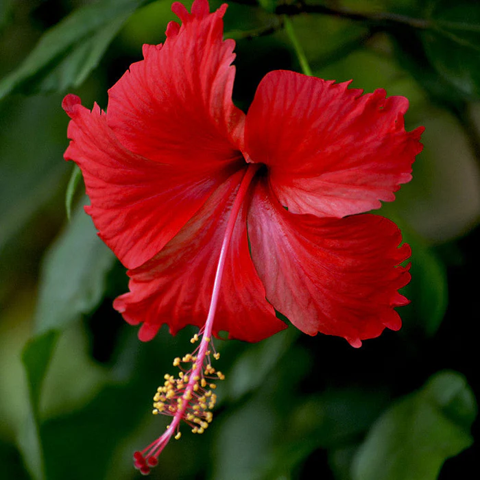
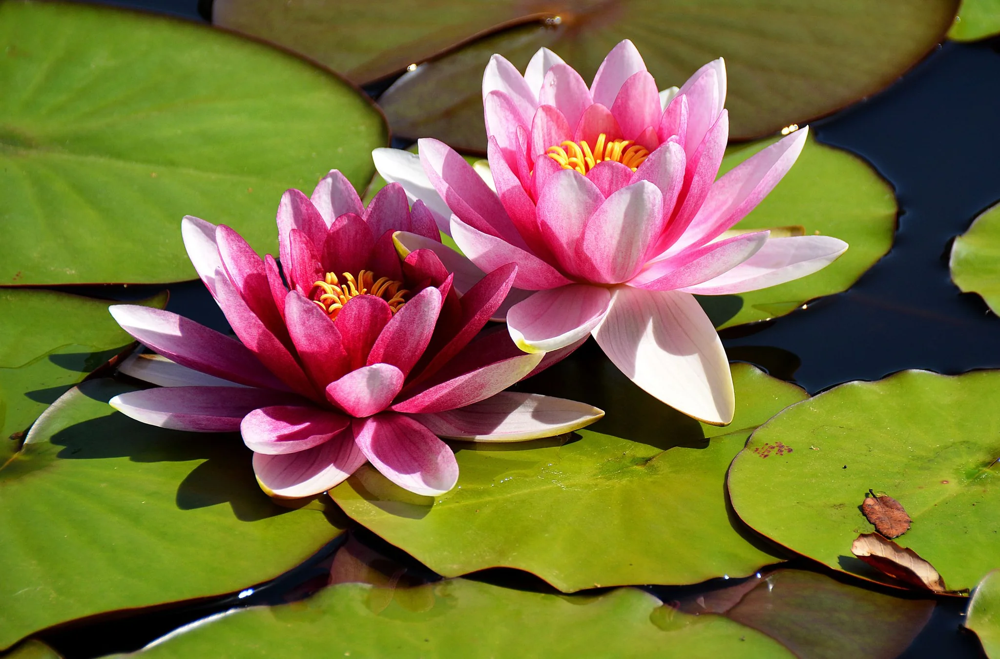

The rose is one of the most beautiful and popular flowers in the world, admired for its vibrant
colors, soft
petals, and sweet fragrance. It symbolizes love, beauty, and passion, making it a common choice for special
occasions like weddings and anniversaries. Roses come in many varieties and colors—each carrying its own
meaning, such as red for love, white for purity, and yellow for friendship. Beyond its beauty, the rose is
also used in perfumes, cosmetics, and even herbal remedies, showcasing its timeless appeal and versatility.
How To Take care:
🌞Give 6 hours of sunlight daily.
💧Water deeply, not too often.
🌱Use fertile, well-drained soil.
🌼Prune dry or dead branches.
🐞Check for pests and remove them.
2.sunflower
About:
A sunflower is a tall, bright yellow flowering plant known for its large, round flower head that resembles
the sun. It belongs to the genus Helianthus and is famous for turning its face toward the sun, a behavior
called heliotropism. Sunflowers are grown for their beauty, edible seeds, and oil, which is widely used in
cooking and industry. They symbolize happiness, loyalty, and positivity.
How To Take Care
🌞 Sunlight: Ensure it gets at least 6–8 hours of direct sunlight daily.
💧 Watering: Keep soil moist but not waterlogged; water deeply once or twice a week.
🌱 Soil: Use well-drained, nutrient-rich soil.
🌼 Support: Tall varieties may need stakes to prevent bending.
🐞 Pest control: Watch for aphids or beetles and remove them promptly.
3.Hibiscus

About:
A hibiscus is a tropical flowering plant known for its large, colorful, trumpet-shaped blooms. It
belongs to the Hibiscus genus and comes in shades like red, pink, yellow, and white. Hibiscus flowers are
often used for tea, decoration, and traditional medicine. They symbolize beauty, love, and delicate charm,
and thrive in warm, sunny climates.
How To Take Care
🌞 Sunlight: Give it 5–6 hours of direct sunlight daily.
💧 Watering: Keep soil consistently moist, but avoid overwatering.
🌱 Soil: Use well-draining, rich soil.
🌸 Fertilizer: Feed with a balanced fertilizer every 2–3 weeks during growth.
✂️ Pruning: Trim regularly to encourage new blooms and healthy growth.
4.Marigold
About:
A marigold is a bright, cheerful flower known for its vivid orange and yellow blooms. It belongs to the Tagetes genus and is popular in gardens, festivals, and decorations. Marigolds are valued for their easy growth, pest-repelling properties, and symbolism of positivity and good luck. They thrive in sunny, warm conditions.
How To Take Care
🌞 Sunlight: Give it full sunlight (6+ hours daily).
💧 Watering: Water moderately—keep soil slightly moist, not soggy.
🌱 Soil: Use well-drained, fertile soil.
🌼 Deadheading: Remove wilted flowers to promote more blooms.
🐛 Pest check: Watch for aphids and mites; treat early if found.
5.Lotus

About:
A lotus is an aquatic flower known for its beautiful, fragrant blooms that rise above the water’s
surface. It grows in ponds and lakes and is admired for its purity, resilience, and spiritual
symbolism—especially in many Asian cultures. The lotus opens in sunlight and closes at night,
representing enlightenment and renewal.
🌞 Sunlight: Needs at least 6 hours of full sun daily.
💧 Water: Grow in still, shallow water (not flowing or deep).
🌱 Soil: Use clay or loamy soil at the bottom of the container or pond.
🌸 Fertilizer: Feed with aquatic plant fertilizer during the growing season.
🍂 Maintenance: Remove dead leaves and flowers to keep water clean and healthy.